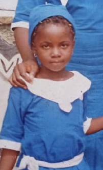
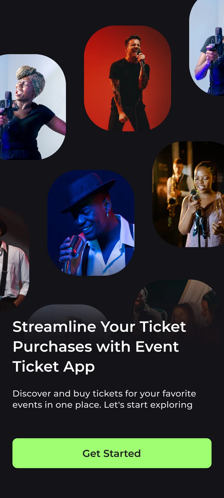

Nice to meet you!
I’m a designer based in Lagos, with a love for beautiful interfaces and thoughtful interactions.
My work spans product, graphic, and web design, and I’m exploring how AI can bring these disciplines closer together.
The Journey
It started with a link in 2022.
I received a link to Tech4Dev’s Women Techsters Fellowship, applied, and got in. That was the beginning of my journey into design.
I had studied Educational Technology. The fellowship became my next step, opening a new chapter in product design.
Where I am now
Taking a course with Dev and Design opened a new direction for me: design engineering.
Today, I’m actively building with AI, using AI tools to turn ideas into working products and ship them. I’m bringing UX design into that process, shaping how a product feels as well as how it works.
These are dearest to my heart.
Randoms







UX Designer
UI DesignerFRANCESCA